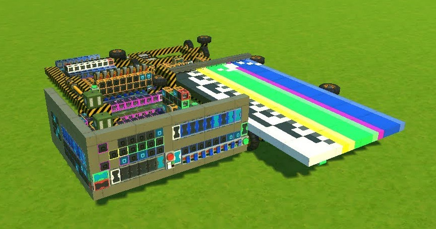

My first YouTube video is that of a simple computer made in a video-game called Scrap Mechanic. The game features the basic logic gates (and, or, xor and the inverted variants) and allows you to connect them together to automate contraptions. Logic isn't the main selling point of the game, but still is quite powerful.
To my knowledge this is the very first published programmable computer made in Scrap Mechanic, and my YouTube video has inspired many others to build their own computers.
At the time I was 14 years old, and I built it in a single weekend. Though this short build time is mostly because of the computer's simplicity and because I had been thinking about how it would work for a week or two prior to actually building it.
The computer doesn't really have an instruction set. Instead, it only has one instruction: copy. This instruction copies the data from one of the sixteen registers to a different one. The trick is that some of these registers are connected to the components of the computer, so the first register is one of the inputs for the ALU, and another register is connected to the program counter allowing for jumping in your program. This single instruction architecture is very easy to build and modify/upgrade, especially with the spudgun/switch approach.
